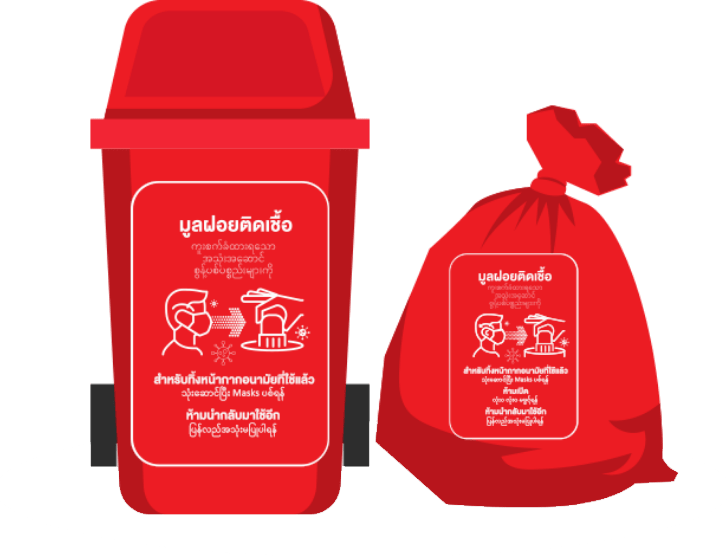
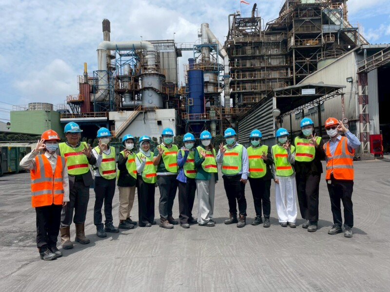

คัดแยก & บรรจุ
ถังและถุงแดงมาตรฐาน
ขยะติดเชื้อจากคลินิกถูกคัดแยกลงถังบรรจุมาตรฐาน พร้อมอบรมบุคลากรให้คัดแยกได้ถูกต้องตั้งแต่ต้นทาง แล้วยกถังขึ้นรถ

รถเก็บขนควบคุมอุณหภูมิตามกฎหมาย ออกเดินทางจากคลินิกสู่ศูนย์กำจัด ติดตามการเดินรถแบบเรียลไทม์ด้วยระบบ GPS

ถึงศูนย์กำจัด ขยะติดเชื้อเข้าเตาเผาอุณหภูมิสูงปลอดมลพิษ ตามกฎกระทรวงว่าด้วยการจัดการมูลฝอยติดเชื้อ พ.ศ.2545

กำกับการขนส่งด้วยเอกสาร Manifest และระบบ E-Manifest ตรวจสอบย้อนกลับได้ทุกขั้นตอน
ทีมงานผ่านการฝึกอบรมการป้องกันและระงับการแพร่เชื้อจากมูลฝอยติดเชื้อ
ถังและถุงแดงมาตรฐาน
รถควบคุมอุณหภูมิ + GPS
เตาเผาอุณหภูมิสูงปลอดมลพิษ

Manifest / E-Manifest